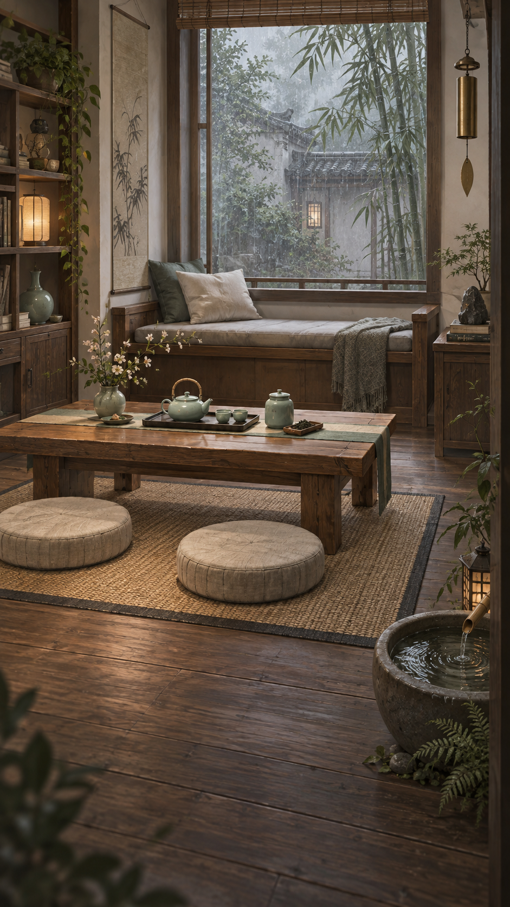
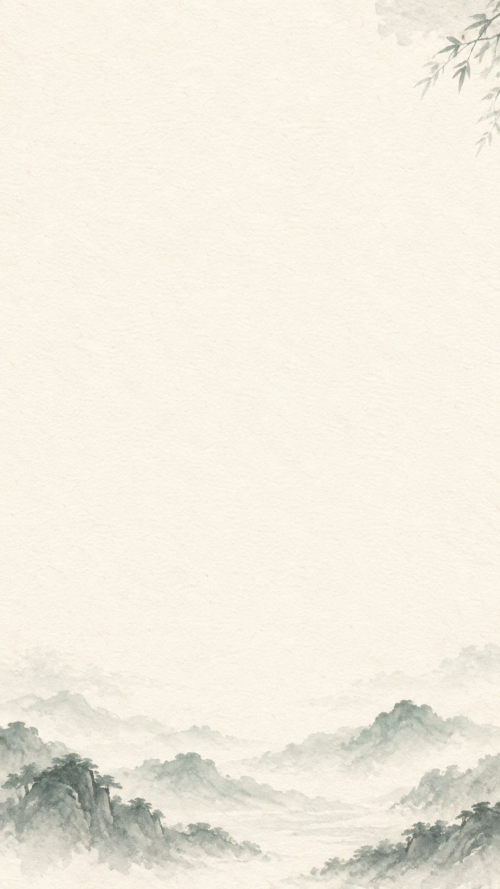
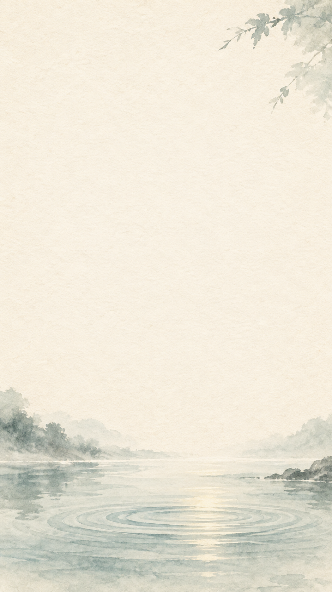
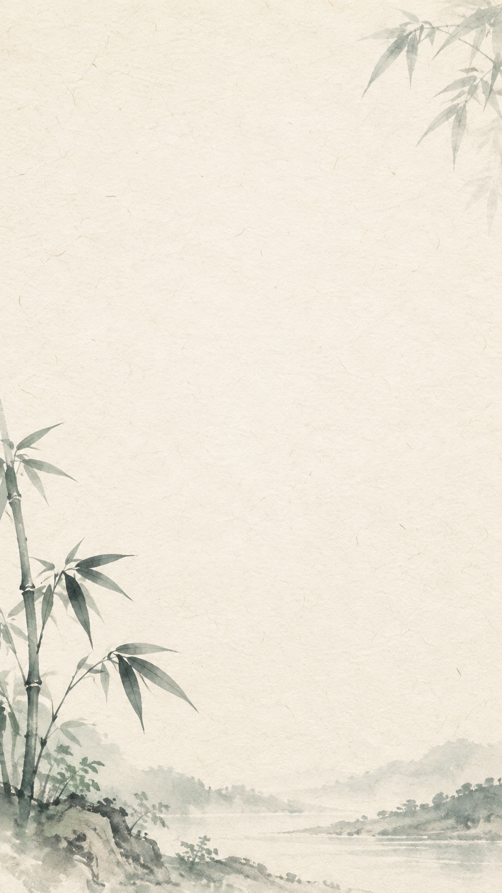

隐庐 · 雨窗茶舍941 × 1672Elena · 倾听透明头像，当前只有平静表情。
两条物料链 · 十种形态
一撮山茶
tea_01 · 1254 px一包山茶
tea_02 · 1254 px小罐清茶
tea_03 · 1254 px精选茶罐
tea_04 · 1254 px山房茶礼
tea_05 · 1254 px素面小盏
ceramic_01 · 1254 px成对小盏
ceramic_02 · 1254 px青瓷茶杯
ceramic_03 · 1254 px青瓷茶壶
ceramic_04 · 1254 px青瓷茶具
ceramic_05 · 1254 px把尺寸降到 64–80 px 检查棋盘可读性。等级数字和名称由游戏界面另外显示。
每日指引 · 共用底图

雾山 941 × 1672
水纹 941 × 1672
竹影 941 × 1672三种底图共用八卡排版。卡片的卦名、六爻、反思文字及日期由程序绘制。